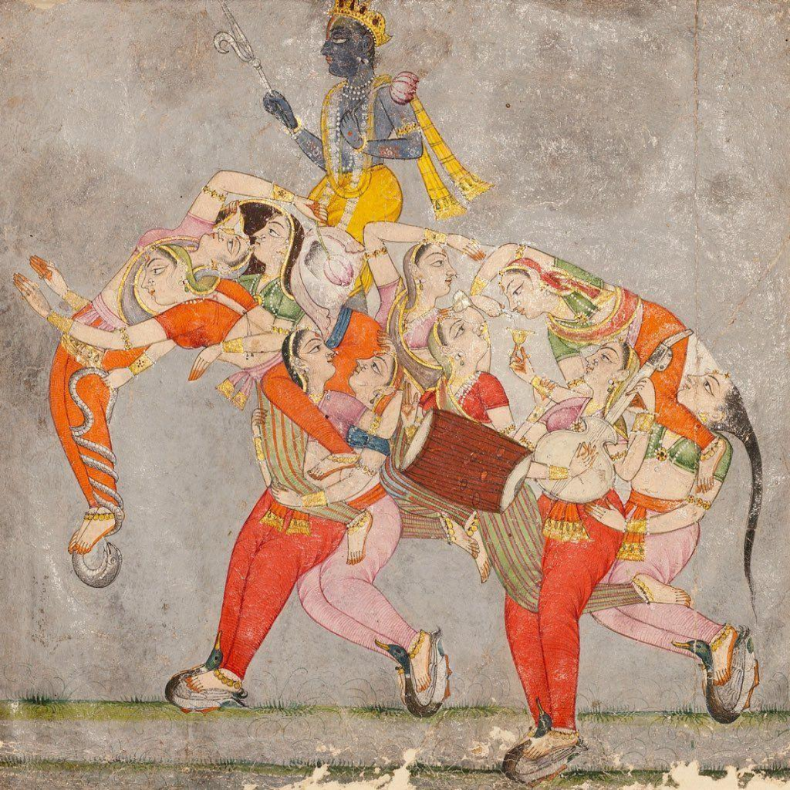
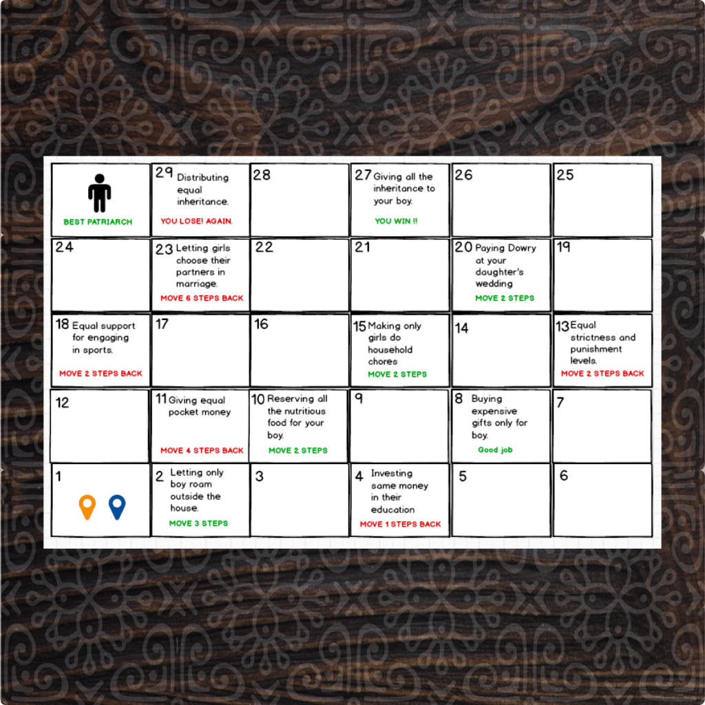
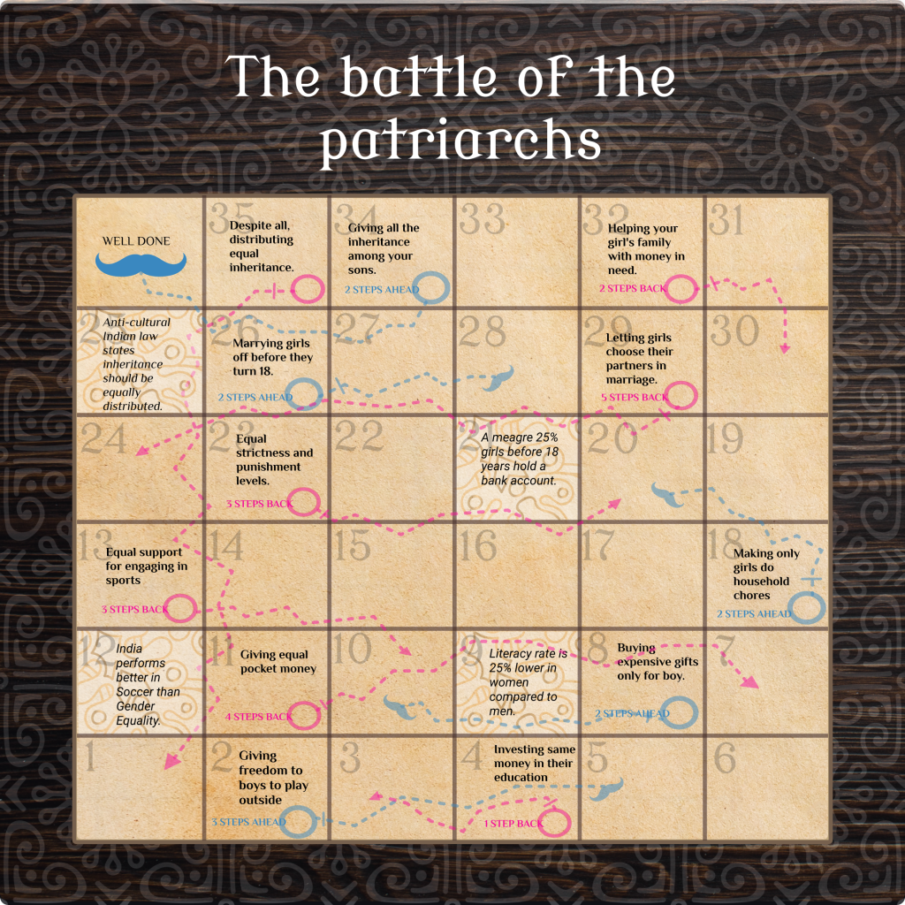
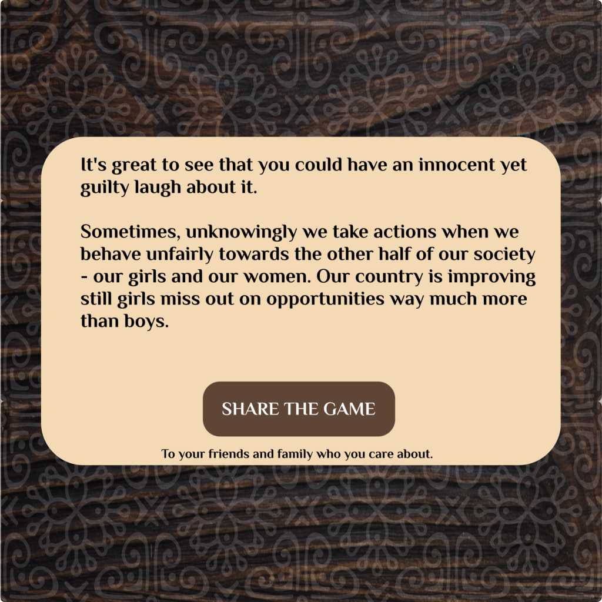
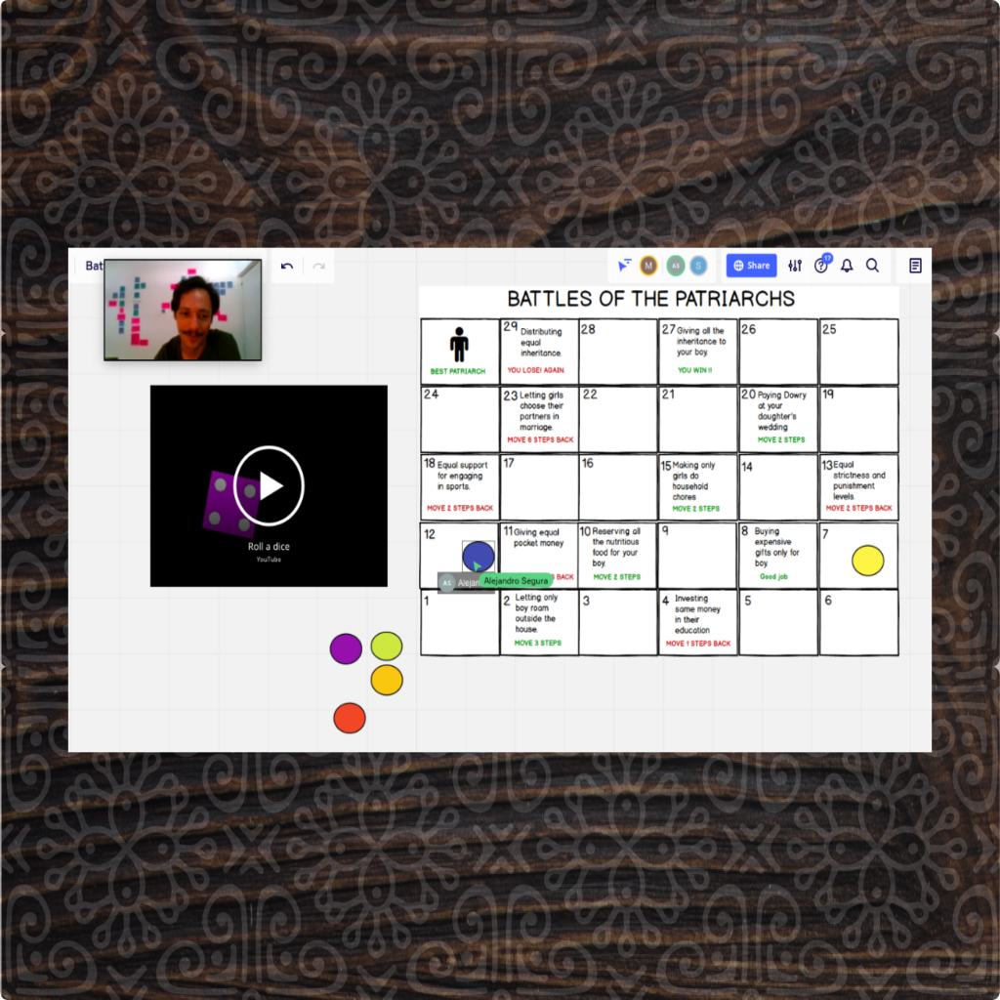

Fight of the Patriarchs
Fight of the Patriarchs is a multiplayer game developed in the ‘Designing for Behavior and Impact’ Course as an effort to increase awareness in society against patriarchy. The context of India is used in this game however patriarchy still exists in many forms even in most ‘developed’ countries.

Insights from Research
Parents don’t involve daughters in financial discussions because they think it is their sole responsibility and that their daughters cannot contribute to those decisions. Daughters don’t ask for their rights because they feel they are not part of their parent’s family. Daughters are scared to ask for their rights due to fear of exclusion from family and society.
Behavioral Biases Investigated
Confirmation Bias promotes patriarchy when people look for evidence for women’s inferiority in society and a few shreds of evidence are taken to the representative of the whole truth.
Identity bias supports patriarchy when men’s consideration of other men to be more alike invokes them to practice favoritism towards men.
Status Quo is one of the prime reasons patriarchy still exists because people take comfort in the present conditions and support the inertia towards patriarchy.
The Game
A simple 2D snake & ladder game where actions of patriarchy are rewarded and equitable actions are punished. The game is created in a mockery form to invoke a subtle feeling of anger or guilt in people while they have a little laugh.
Many behavioral change techniques are at play in this game. Namely, the First-Person technique where people give more weightage to things when they feel a sense of control. The technique of Depersonalization is used where being in a game makes it light-hearted for people as it works like the magic of role-playing. Eventually, the strategy of Soft Commitment is used at the end of the game by asking people to share the game that helps distribute the game.
Usability Testing
It made people laugh but ponder. People felt guilty at winning through an unfair means – that stuck in their head. It performed differently for men and women. It invoked guilt/empathy in men and anger in women.
